TypeJotterTYPEWRITER JOURNAL
A pared-down journal with the feel of a mechanical typewriter, built so you can just write.
Download
At a glance
What it is
Like a typewriter, your line stays put
The place you write never moves or hides. As the words pile up, the paper rolls up. Write light, focused on the page.
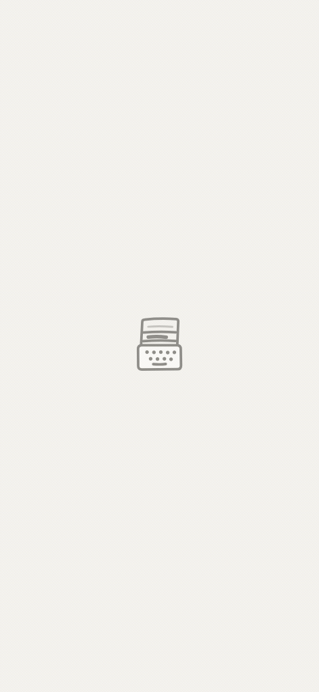
Simple enough to keep coming back
Complicated features are why journals get abandoned. TypeJotter stays plain and quick, so the writing is all that is left.
Open the app and type. The date is stamped for you.
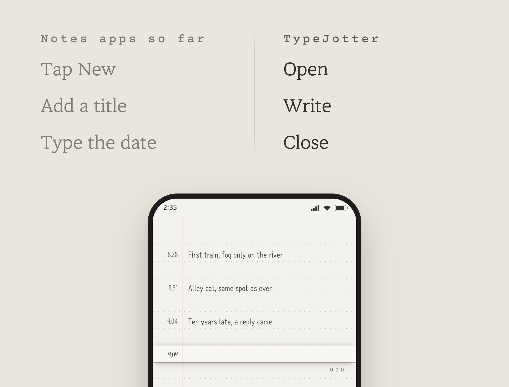
Sort it into notebooks
Daily, goals for the year, ideas, things not to forget. Make the notebooks you want and move between them with a tap.
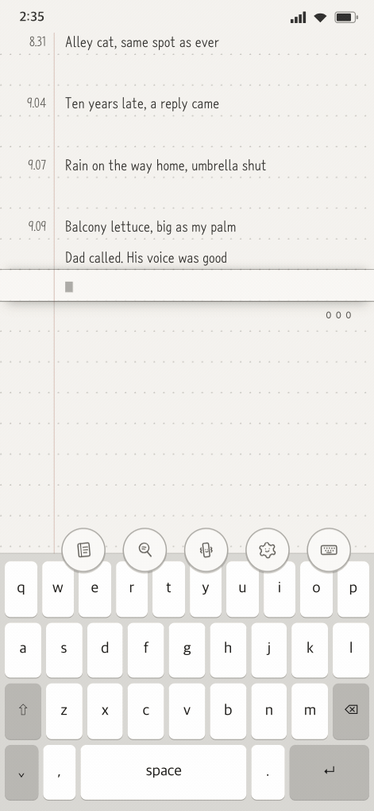
Search past entries and look back
Find what you wrote, fast. Search within a notebook, or browse past days by date.
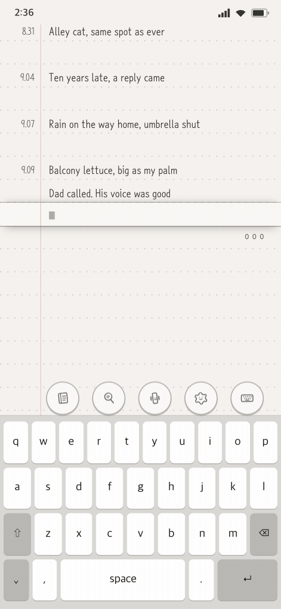
What's new
How to use
Writing
- Tap the line you want to write on, or drag the paper until that line sits in the input slot.
- Type. The date is stamped for you.
- Done writing? Tap an empty part of the paper.
- The button at the bottom cycles through Write, Read and Locked.
When you only want to read, switch to Locked. In Locked mode, tapping a line won't open the input.
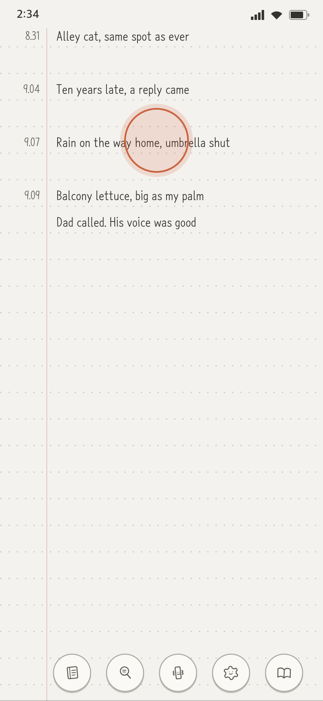
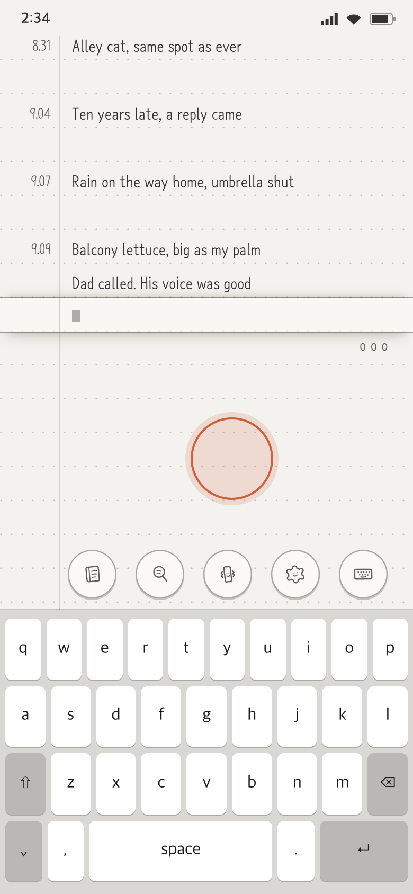
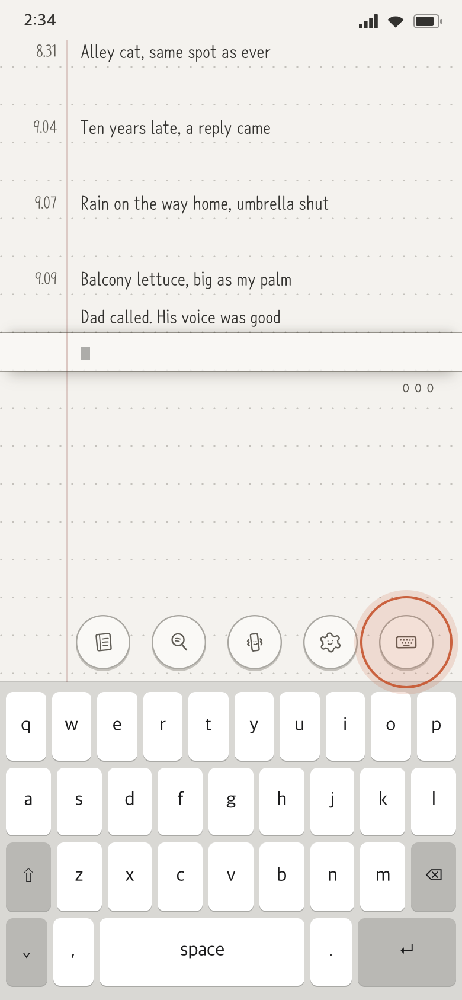
Notebooks
Keep separate notebooks: daily, goals, ideas.
- Tap the notebook icon at the bottom to open the notebooks panel.
- Tap a notebook twice to switch to it.
- A new notebook opens as soon as you give it a name.
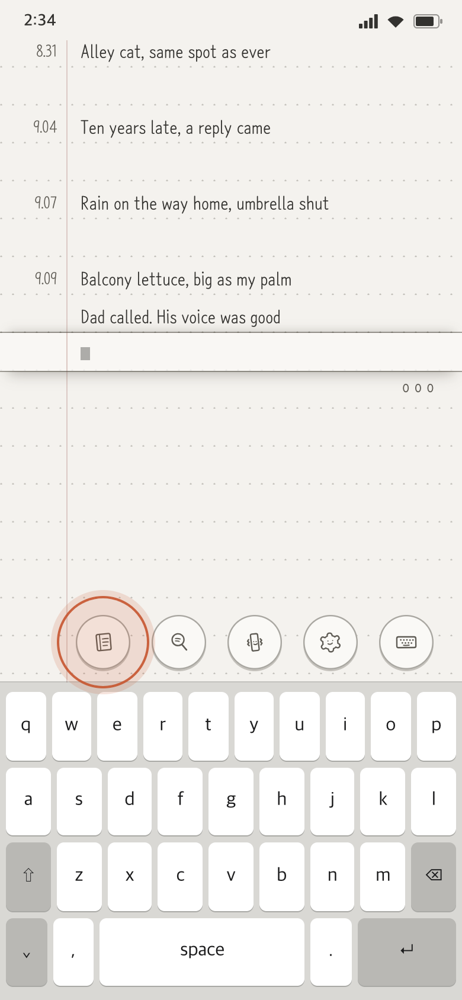
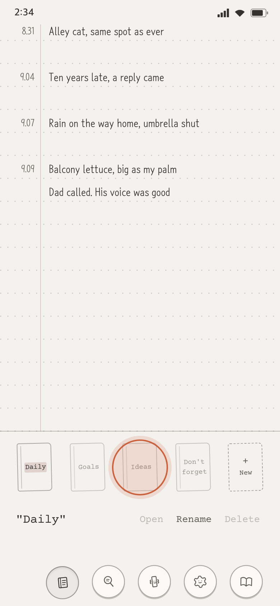
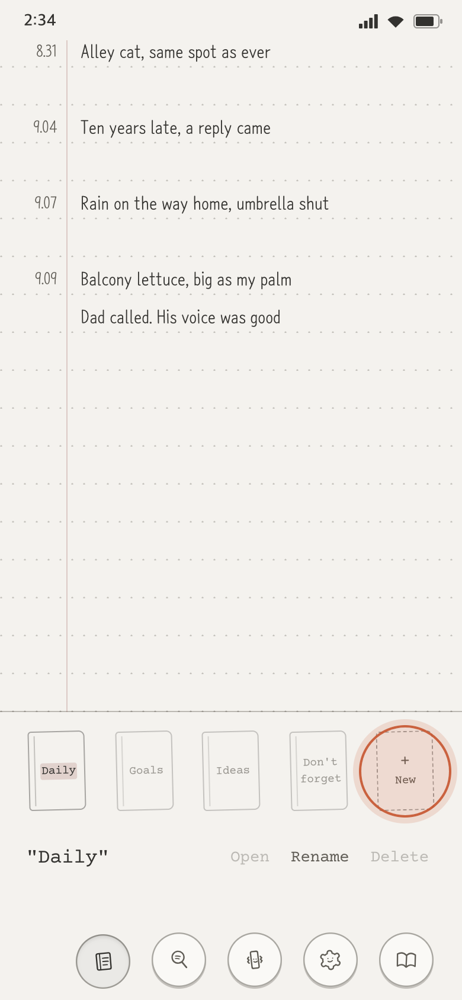
Search
Search the notebook you're in.
- Tap the magnifier icon at the bottom and type a word.
- Every line with that word gathers, each with its date.
- Tap a line to go to that day, that line.
- Or pick a date from the “Past days” list to jump there.
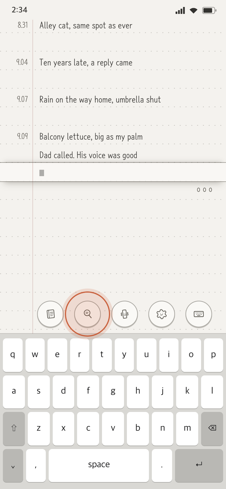
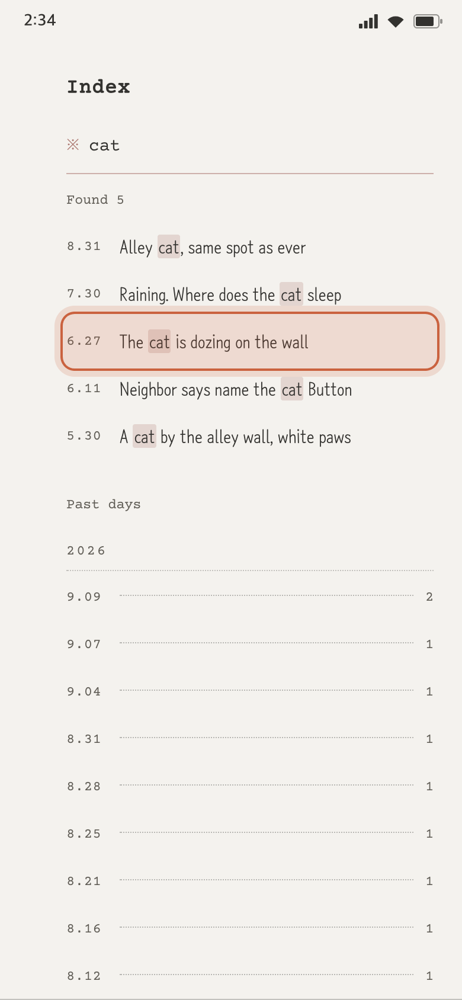
Font and paper
Pick the font, paper tone and ruling you like.
- Tap the settings icon at the bottom. The settings panel opens.
- Choose the font and text size, the paper tone and the ruling.
- The paper changes as you choose.
- Haptics turn on and off with the haptics icon at the bottom.
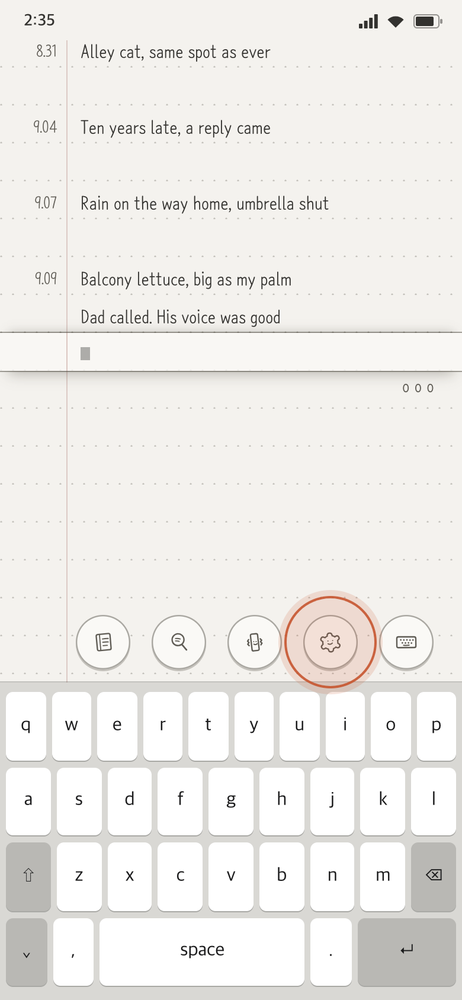
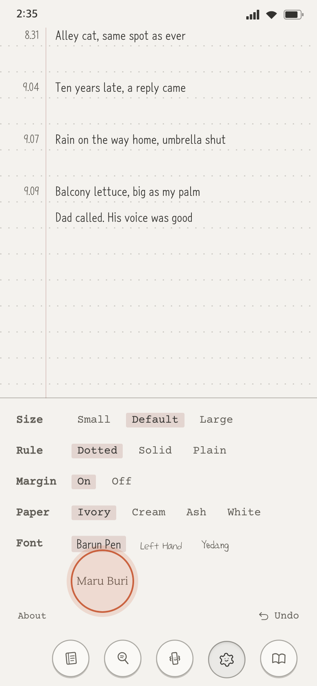